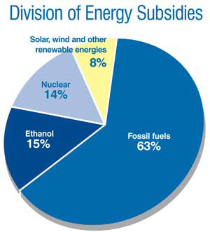

Fact: All forms of energy are subsidized. Oil. Gas. Coal. Nuclear. Renewables. All of them. No type of energy stands alone in the market, free of tax breaks, research grants or other forms of government help. Fact: Subsidies are ultimately funded by the taxes we pay.
Few except pure libertarians would do away with all government intervention in the energy marketplace. But the salient question is, given the increasing problems connected with conventional energy, which subsidies make sense and which don’t?
The question must be asked because our current energy habits are not sustainable for the environment, our national security or our economic health. The United States must establish a long-term strategy to shift to cleaner, more diverse, more secure sources of energy used more efficiently. Subsidies can be a major tool in this effort, and those that move us closer to that goal deserve support. Those that don’t should be terminated.
Beyond environmental impacts, there are good reasons to rewrite our nation’s energy script. America uses too much oil too inefficiently. Imported oil fills the gap between rising demand and declining domestic production. In 2004, imports accounted for 58 percent of consumption. By 2030, imports will reach 62 percent, government projections forecast.
Oil dependence leads to serious security risks. Many oil-exporting countries, such as Iran and Saudi Arabia, are run by unpredictable regimes. Violence and civil unrest in such countries can roil an increasingly tight global oil market, adding a “fear premium” to prices and exposing the economy to disruptions that could send fuel prices upward. Furthermore, high U.S. demand keeps oil prices high - a subsidy we pay to what New York Times columnist Thomas Friedman calls the world’s worst regimes.
At some point, crude oil production will peak and begin an inexorable decline. No one knows for sure when “peak oil” will be reached, but some experts say it is just around the corner. Long lead times will be necessary to introduce replacement fuels, according to a 2005 study published by the National Energy Technology Laboratory. Better to start sooner on alternatives rather than later, or risk serious harm to the economy, the study said.
The clinching argument for a new energy strategy is global warming. Few reputable scientists disagree that the climate trend bears human fingerprints. Without U.S. leadership and action, there is little chance of halting the buildup of heat-trapping greenhouse gases in the Earth’s atmosphere. The risks of harmful consequences - coastal flooding, increasingly violent weather, spreading of pests and disease, water and food shortages - will rise to dangerous levels. As science academies from the United States and 10 other nations said in a joint statement last year, prompt action is necessary to prevent dangerous, human-caused interference with global climate systems.
Unfortunately, Congress’ approach to energy policy has been to kowtow to lobbyists and campaign donors rather than craft a strategy to deal forthrightly with energy-related risks. The Energy Policy Act of 2005 was a wasted opportunity of historic proportions. At a time of rising fuel prices, Middle Eastern turmoil and growing evidence that humanity is messing with the planetary thermostat, Congress produced a bill that the Philadelphia Inquirer called a “lobbyist’s paradise and a citizens’ nightmare.” It contains $85 billion worth of subsidies for energy research, royalty concessions and tax breaks, according to Taxpayers for Common Sense, a budget watchdog group.
Useful measures in the legislation that promote conservation and resource diversification were offset by handouts that will sustain our addiction to oil. Proposals to boost fuel economy standards and increase investment in renewably generated electricity were left on the cutting room floor. An amendment to adopt caps on greenhouse gas emissions was blocked.
One of most egregious lollipops in the legislation is a $1.55 billion fund to pay for oil and gas research. Most of the fund will be administered by a private consortium, and a leading candidate is a group backed by former congressman Tom DeLay and made up of executives from Halliburton and other energy companies. Critics call it a giant slush fund for cash-rich oil companies.
Such a cockeyed distribution of energy subsidies is an example of what Jared Diamond, author of Collapse: How Societies Choose to Fail or Succeed, calls “rational bad behavior.” The recipients of such largesse are few in number, but highly motivated to keep their place at the trough. Those who pay the subsidies (the taxpayers) are large in number, but each individual only pays a little and is not motivated to spend a lot of time fighting the subsidies.
The task of quantifying energy subsidies involves both arithmetic and art. As the International Energy Agency wrote in a 2002 report on subsidies: “Estimating their size depends heavily on definitions and methodologies.” Because of the laborious work involved, detailed assessments of energy subsidies aren’t produced often.
The National Commission on Energy Policy (NCEP) - a panel of business leaders, public officials, scientists and environmental advocates - included a rough estimate of federal energy subsidies in the policy recommendations it released in 2004. The estimate showed that during 2003, federal energy subsidies totaled between $37 billion and $64 billion. While it is a rough estimate, it showed that the subsidies can take many forms.
Research and development (R&D) subsidies are one of the biggest segments. Between 1998 and 2003, the federal government provided $11.8 billion in R&D grants, in roughly equal thirds going to nuclear, fossil fuels, and to efficiency and renewable resources.
Nuclear energy - still an economic problem child with radioactive waste management issues - has been the top beneficiary of federal R&D largesse. Between 1978 and 1999, across Republican and Democratic administrations and Congresses, the federal government spent $26.1 billion on nuclear energy R&D, according to a U.S. Department of Energy study.
But R&D is not the only large-scale energy subsidy. Between 1990 and 2002, oil and gas companies reaped nearly $12 billion as a result of improper reporting of royalties due. Earlier this year, a political firestorm erupted when President Bush’s proposed 2007 budget estimated that oil and gas companies will avoid paying $7 billion in royalties between now and 2011 for producing oil and gas from federal lands and waters. The giveaway is due to production incentives adopted a decade ago when oil prices were a fraction of today’s level.
Favorable tax treatment is another rich source of subsidies. According to NCEP, accelerated depreciation (which allows businesses to write off costs for depreciable property before it actually depreciates) will yield up to $26 billion between 2004 and 2008 for fossil-fuel burning electric utilities.
Redirecting subsidies is an essential component of a strategy that deals with the energy problems on our nation’s doorstep. The necessary elements to do so are clear and well within America’s entrepreneurial and technological capability. They include improving energy efficiency across the board, mandating lower carbon emissions, and replacing oil and other fossil fuels with solar, wind, homegrown biofuels and other clean energy sources that are not under the control of dodgy foreign regimes.
One framework for a new strategy is the idea of “climate stabilization wedges” developed by Robert Socolow, a Princeton University engineering professor. Socolow says that over the next 50 years, technologies can help stabilize the atmosphere’s carbon dioxide concentration at about 200 percent of the preindustrial level (today we are at about 36 percent above the preindustrial level). No single technology can do the whole job, but seven “wedges,” each representing the annual avoidance of 1 billion tons of carbon emissions, add up to achieving the goal. Possible wedges include efficiency, renewably generated power, nuclear energy and carbon capture and storage.
The Energy for Our Future Act, sponsored by Rep. Christopher Shays (R-Conn.), would redirect subsidies in order to promote efficiency and renewable energy. At the same time, the bill would repeal some subsidies that last year’s energy legislation granted for fossil fuels.
Time is short to change our energy course from the risky path that we are traveling to a new path of lower costs, less danger and wise stewardship of the only atmosphere that we have. Congress can be prodded to act in the country’s best interests only if citizens make their views clear and demand that lawmakers enact a rational energy strategy equal to the difficulties ahead. It will take a mix of good ideas and strong will to move forward. Ideas are available in abundance. But only we, the people, can supply the necessary will.
|
VEER Large-scale wind power has tremendous potential in the United States, particulalry in the Midwest. |
 1999 R&D GRANTS AND TAX SUBSIDIES; U.S. ENERGY INFORMATION ADMINISTRATION Fossil fuels traditionally receive the lion’s share of federal energy subsidies, which are funded by our taxes. A better strategy for the long term would be to shift that support to developing renewable energy industries. |
|